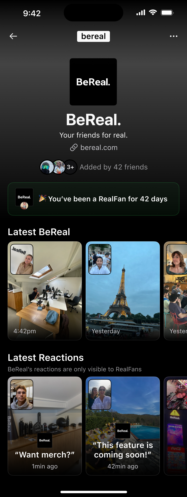

BeReal 深度盘点：一款反社交焦虑的真实实验体现在能做什么
从每日仪式到群内空间、从超时宽容到粉丝体系，BeReal 用一套不寻常的设计逻辑重构了社交的基本假设。我们把它的能力面完整铺开。
为什么要认真盘点一款被很多人说"玩不起来"的 App
BeReal 是这些年最反常的社交软件产品之一。去它的官网看一眼，核心主张——每天随机时间通知你，前后双摄同时抓拍一张不加滤镜的照片，两分钟内发布——听起来像是一个反社交软件的实验：不点赞、不刷量、不推荐算法、不做信息流。有人用了一周就卸载，有人连续打卡几百天舍不得走。
争议从来不少，但争议本身就是信号：BeReal 触碰到了现有社交产品没有解决的真实需求。把它拆开来系统性盘一遍，你会发现它的能力设计围绕"反焦虑"这一个轴心展开，每个功能决策都在跟行业惯例对着干。这种系统性的反共识，恰恰值得认真看。
下面我按能力域分组，把 BeReal 当前能做到的事情完整铺开，不吹不黑。
能力域一：每日仪式感——不是社交任务，是生活切片
它提供什么
BeReal 的核心循环极其简洁——下载安装后，每天随机时刻推送一条"Time to BeReal"通知，点开后前后摄像头同时启动，抓拍你此刻在做的事情。你有大约两分钟的推荐窗口发布，过了窗口也能发，但会被标记"晚了 X 分钟"。发布后才能解锁好友当天的 BeReal。连续每天发布会累积 Streak 火焰标记。
亮点在哪
最聪明的设计在那个"2 分钟窗口是推荐不是截止"的机制上。BeReal 给你时间压力（倒计时）来促成立即分享，但又不给你硬性惩罚（超时也能发）。开会没空拍、睡觉没听到通知、手机在别处——所有真实生活里会发生的意外，它都宽容接住了，只是诚实地贴个迟到标签。

这种设计哲学贯穿所有细节：只有你发布了当天的 BeReal 才能看好友的内容——平等的入场券，不是单向消费；不支持相册上传，只能实时抓拍——杜绝摆拍；前后双摄强制同时出片——你在拍什么和你用什么设备拍，被同等对待。
什么场景用得上
适合希望用一个轻量方式记录日常、同时又不想陷入朋友圈那种点赞焦虑的人。两分钟的约束反而成了一种创作自由——你不用想构图、不用修图、不用等好时机，按下快门就完成了。很多长期用户说，它提供的不是"内容"，是"当天自己状态的一个锚点"。
能力域二：群内空间——把仪式感搬进小圈子
它提供什么
RealGroup 是 BeReal 为亲密小圈子设计的群组空间。群内可以发布不同于正式 BeReal 的 Bonus BeReal——没有每日一次的限额，随时能发，不计入 Streak，也不对 FOF（好友的好友）广场可见。群内有独立的评论、RealMoji 互动，还能单独配置通知。
亮点在哪
Bonus BeReal 这个概念设计得很巧妙。它把"正式发布"（每天一次、计入 Streak、有时间压力）和"额外分享"（随时发、不计打卡、零压力）分成了两个并行通道。想认真完成每日仪式就走正式通道，想随手分享个场景就发 Bonus BeReal，两者互不干扰。
群组的通知控制也做得极其精细：可以单独关闭某个群的通知、只关闭某个群的每日 BeReal 特别提醒、根据时间调整开关。甚至和系统勿扰模式的配合也考虑到了——BeReal 的通知开关和手机系统的静默是叠加关系，要排除 BeReal 的话得去系统层面手动设置。
什么场景用得上
小圈子集体"打卡"——比如几个同事建个群，每天收到正式通知后各自发完，顺手在群里也发一条，就能把 BeReal 从个人仪式变成群内的每日话题。Bonus BeReal 的不限次也适合活动场景：一起出去玩的时候随手多发几条，事后群里翻出来看，比单独的照片合集更有"当时在场"的质感。
能力域三：粉丝与社区连接——不付费、不算法、讲真诚
它提供什么
RealFans 是 BeReal 为认证账号（RealPeople / RealBrand）设计的粉丝等级体系，运作细则可以去bereal文档翻看。对喜欢的认证账号持续互动——发 RealMoji、留评论、分享他们的 BeReal、在自己的内容里 @——一段时间后会自动升级为 RealFans，解锁专属权益：能在认证账号的 BeReal 下留言（普通关注者没这个权限）、能看到其他 RealFans 的评论、能查看认证账号在别的用户内容下留下的互动痕迹、能解锁只给 RealFans 看的专属内容。
亮点在哪
RealFans 完全不像其他平台的会员体系。它不付费、不公开升级规则、不看粉丝数只看互动质量。BeReal 明说不希望用户为了升级而机械刷互动，而是希望自然的、真诚的连接。甚至等级还是针对单个认证账号的——你对 A 是 RealFans 不代表对 B 也是，长期不互动还可能降级。

这种设计把"粉丝"这个词的含义悄悄改了——它不再是一个数量指标或花钱买的头衔，而是"你和这个认证账号之间真实互动过"的证明。对创作者来说，RealFans 也是一个筛选信号：知道谁是真正在乎自己内容的人。
什么场景用得上
适合想和喜欢的创作者建立更深层连接的普通用户——在其他平台你很难真的被创作者看到评论，但在 BeReal 的 RealFans 体系里，认证账号会被提醒哪些粉丝在持续互动。对创作者来说，RealFans 群体可以变成一个小型核心社群，用来做内测、发独家内容、或者只是和最活跃的粉丝保持对话。
短板也要说：它不是万能的
盘点到这里，必须诚实地说 BeReal 做不了什么。
首先，内容形态非常单一。核心只有图片（实时抓拍的一张），没有视频、没有长文、没有语音。对习惯了多维度内容消费的人来说，这种单一性会显得贫瘠。你不可能在 BeReal 上看到教程、分析、观点——它只记录"此刻"。
其次，社交启动门槛比想象中高。BeReal 的乐趣严重依赖好友基数。如果通讯录里只有两三个朋友在用，你每天发布后只能看到两三张照片，很快就会觉得没意义。而且"只有发布了才能看好友内容"这个规则在好友少时反而变成了负担——为了不被朋友看到没发，你得硬着头皮每天抓拍。
第三，它的"反社交"本身就是一种局限。没有算法推荐意味着发现新内容的效率很低，你只能看到好友和 FOF 的内容。如果你想找某个兴趣领域的内容，BeReal 不是合适的工具，它根本没打算让你"冲浪"。
最后，功能迭代速度偏慢。对比抖音、Instagram 每隔几周就有的新功能，BeReal 一年能上线两三个新东西就不错了。它的团队看起来在有意控制功能增长——这是优点也是风险，太慢了容易错过用户耐心。
什么样的人该用它
说了这么多能力和局限，最后落个实用的结论：不是所有人都需要 BeReal，但有几类人应该认真试试。
第一类，被社交平台焦虑困扰的人。 如果你每天刷完朋友圈或微博会莫名烦躁、会不自觉对比别人的生活、会为了发一张图反复修半小时——BeReal 的"无滤镜、无点赞、无算法"的三三无环境，是目前市面上最干净的社交空间。不是说用了就一定治好焦虑，但它至少不会主动制造焦虑。
第二类，想把社交重心拉回小圈子的人。 RealGroup 提供了一个比微信群更轻量的集体互动方式：不用刻意找话题、不用打字寒暄，每天一张照片就够了。 Bonus BeReal 机制让群里的分享不局限于一天一次，想多发随时能发。
第三类，喜欢真实感、讨厌摆拍的创作者。 RealFans 体系让你可以和粉丝建立"真实互动"而非"流量数字"的关系。你的粉丝不会因为你没发爆款就取关，他们关注的是"你每天在做什么"，这是一种截然不同的创作反馈机制。
总的来说，BeReal 不完美，但它在做一件值得认真对待的事：重新回答"社交软件到底应该服务谁"这个问题。它给出的答案是——服务真实的人，而不是算法和数字。如果你也对现有社交产品感到疲惫，不妨试试看这个反其道而行之的实验体。
从 BeReal 的核心设计理念到 RealGroup 的群组仪式、从超时宽容的时间机制到 RealFans 的粉丝体系，这套资料覆盖了大部分你可能想了解的细节。GitHub、Gitee、GitCode 三个仓库都有同步备份，挑自己访问最顺的那份就行。